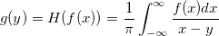
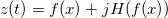

このXファンクションは、入力データに対応するヒルベルト変換や解析信号を計算します。
f(x) を入力信号とし、 H(•) はヒルベルト変換の演算子とします。 f(x) のヒルベルト変換(次の式で g(y) で表される) は次のように定義されます。

結果は、以下のグラフに示すように、入力データの90度の位相のずれがあります。
この関数は、また、入力データに対応する解析信号も計算します。解析信号は、負ではない周波数成分を持つ信号です。z(t) を解析信号とすると、下記の式になります。

ヒルベルト変換を使うには:
|
このセクションのトピック: |